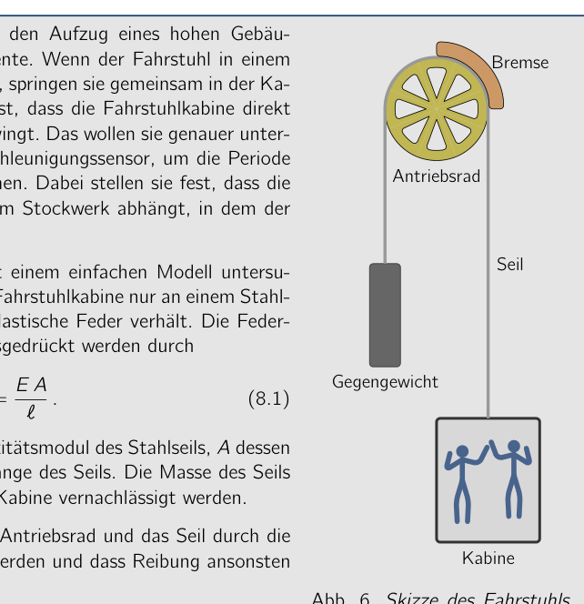
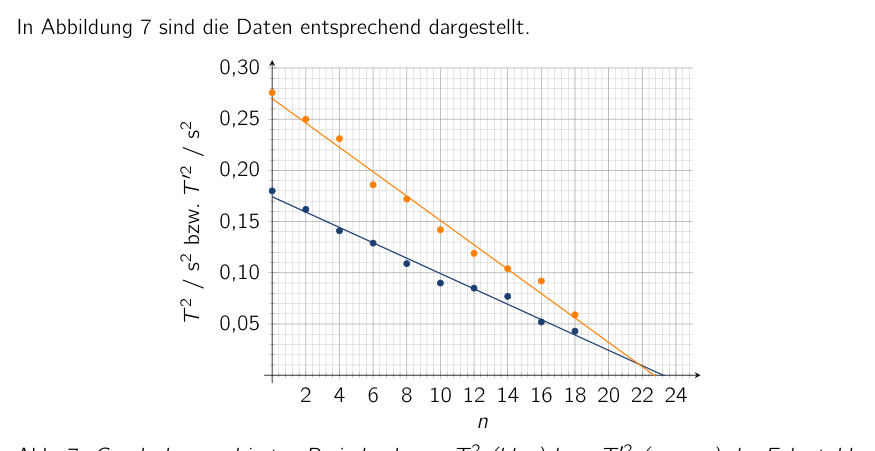

Problem 8 Elevator Oscillations (20.0 pts.) (Problem group of the PhysicsOlympiad - Stefan Petersen) Sophia and Alexander use the elevator of a tall building for physics experiments. When the elevator comes to a stop at a floor, they jump up together inside the cabin. They find that the elevator cabin oscillates vertically immediately after landing. They want to investigate this more closely and use an acceleration sensor to determine the period of this oscillation. In doing so, they find that the oscillation period depends on the floor at which the elevator currently is. You are to investigate this behavior with a simple model. For this, assume that the elevator cabin hangs only from a steel cable that behaves like an elastic spring. The spring constant of the cable can be expressed by (8.1) Here denotes the elastic modulus of the steel cable, its cross-sectional area and the length of the cable. The mass of the cable is to be neglected compared to the mass of the cabin. Furthermore, assume that the drive wheel and the cable are completely blocked by the brake and that friction can otherwise be neglected. 8.a) Determine an expression for the restoring force on the elevator cabin when it is displaced by a small distance with from its respective rest position in the vertical direction. (2.0 pts.) Counterweight Cabin Drive wheel Cable Brake Fig. 6. Sketch of the elevator with suspension. The restoring force leads to a vertical oscillation of the elevator cabin 8.b) State the period of this oscillation and express it in terms of the quantities , , and the total mass of the elevator cabin with the people inside. (3.0 pts.) The following table shows the oscillation periods determined by Sophia and Alexander for a stop at various floors. The ground floor (GF) is approximately at ground level and each floor is about 3.0 m high. Floor 18 16 14 12 10 8 6 4 2 GF / s 0,21 0,23 0,28 0,29 0,30 0,33 0,36 0,38 0,40 0,42 / s 0,24 0,30 0,32 0,34 0,38 0,42 0,43 0,48 0,50 0,53 The lower row of the table with values for is needed only in the last part of the problem. 8.c) Create a graph of as a function of the floor. From this, determine the approximate height of the building. (6.0 pts.) The reports of Alexander and Sophie also motivate their circle of friends. They repeat the experiment on another day with an additional mass of 500 kg in the elevator cabin
- the two evidently have many friends. The oscillation periods determined this way are listed as in the table above. 8.d) Using the data, determine approximately the mass of the elevator cabin with Sophia and Alexander inside. (7.0 pts.) The model considered is only a more or less good approximation to reality. 8.e) Name at least two physical aspects that in reality probably lead to deviations from the model. (2.0 pts.) Solution 8.a) Calculations and explanations In the rest position, the tension force of the cable and the gravitational force on the cabin exactly balance. The restoring force under a small displacement from the rest position is therefore caused solely by the stretching or relief of the cable and is, as with an elastic spring, (8.2) The cable length here does not denote the total length of the cable between cabin and counterweight, but only the length of the vertical part between the brake of the drive wheel and the elevator cabin. 8.b) Calculations and explanations The force accelerates the cabin of total mass according to the equation of motion and thus (8.3) This is the equation of motion of a harmonic oscillation with angular frequency (8.4) For the period of the oscillation, this gives (8.5) 8.c) Calculations and explanations For the cable length , the period according to (8.5) becomes 0 s. This is approximately, typically up to a few meters for the elevator machine room, the case at the upper end of the building. To estimate the height of the building, the position of the elevator cabin for which the cable length equals zero is therefore sought. This can be determined graphically. From equation (8.5), one obtains for the square of the period (8.6) The quantity therefore depends (affinely) linearly on the cable length and thus also on the floor. The following table gives the squares of the periods and . Floor 18 16 14 12 10 8 6 4 2 GF / s 0,21 0,23 0,28 0,29 0,30 0,33 0,36 0,38 0,40 0,42 / s 0,043 0,052 0,077 0,085 0,09 0,109 0,129 0,141 0,162 0,18 / s 0,24 0,30 0,32 0,34 0,38 0,42 0,43 0,48 0,50 0,53 / s 0,059 0,092 0,104 0,119 0,142 0,172 0,186 0,231 0,25 0,276 Figure 7 shows the data accordingly. 2 4 6 8 10 12 14 16 18 20 22 24 0,05 0,10 0,15 0,20 0,25 0,30 / s or / s Fig. 7. Graph of the squared periods (blue) and (orange) of the elevator cabin oscillation as a function of the floor at which the elevator is located, with best-fit lines. The blue best-fit line for the values of intersects the -axis at the floor . With the given floor height of m, this gives as an estimate for the building height (8.7) Here no additional height for the elevator machine room was taken into account. This can also lead to other estimates. 8.d) Calculations and explanations According to the problem, the oscillating mass changes by kg because of the additional people in the elevator. According to (8.6), this also changes the slope of the linear behavior of the squared period. For this it holds: (8.8) From the ratio of the two slopes one obtains (8.9) The two slopes can be determined from the graph as and (8.10) For the mass of the elevator with Sophie and Alexander, this finally gives (8.11) Because of the uncertainties in determining the slope and its large influence, in particular on the difference in the denominator of (8.11), the results can deviate considerably from this value. 8.e) Calculations and explanations The model reflects reality only in a strongly simplified way and neglects a number of aspects relevant in practice. These include: • The oscillating system is more complex than a rigid mass oscillating on a single spring. Both the elevator cabin and the attachment to the drive wheel are not completely rigid, but can also oscillate. • The oscillation is actually damped, which also changes the period. • Modeling the cable as completely elastic and nearly massless is in reality not necessarily accurate. • The oscillation will not be completely vertical. Note: Parts of the problem can be found in similar form in the article Vogt, P., Kuhn, J., Müller, A. (2014). Betrachtung des Aufzugs als Federpendel. Unterricht Physik Nr. 140. In particular, the data are based on those given in that article. Grading - Elevator Oscillations Points 8.a) Recognizing that the gravitational force plays no role 1.0 Using the behavior of a spring and stating

Elevator scheme with suspension
Graph T² of elevator oscillation periodsTopic: Oscillations & Waves, Elasticity & Materials Metodi: Simple Harmonic Motion Analysis, Hooke’s Law, Graph Linearization Competenze: Mathematical Modeling, Graph Linearization, Experimental Data Analysis Objects: Spring Fonte: Testo (PDF) — p.16
Problema 8 Oscillazioni di ascensore (% di 20%) (Problema group of the PhysicsOlympiad - Stefan Petersen) Sophia e Alexander usano l’ascensore di un edificio alto per esperimenti di fisica. Quando l’ascensore arriva a una fermata a Scalda, saltano insieme dentro la cabina. Scoprono che la cabina dell’ascensore oscilla verticalmente immediatamente dopo l’atterraggio. Vogliono indagare più da vicino e utilizzare un sensore di accelerazione per determinare il periodo di tempo. di questa oscillazione. In tal modo, trovano che il Il periodo di oscillazione dipende dal livello di oscillazione L’ascensore è attualmente in funzione. Dovete indagare su questo comportamento con un modello semplice. Per questo, supponiamo che la cabina dell’ascensore appenda solo a un cavo di acciaio che si comporta come una molla elastica. The spring constant of the cable can be expressed by (8.1) Qui denotes the elastic modulus of the steel cable, its area di sezione trasversale e la lunghezza del cavo. La massa del cavo è da trascurare rispetto al massa della cabina. Inoltre, supponiamo che la ruota di guida e il cavo siano completamente bloccato dal freno e che la friczione può altrimenti
- Non lo so.
- (a) Determinazione di un’espressione per la forza di ripristino the elevator cabin when it is displaced by a small distance con dalla sua rispettiva posizione di riposo nella direzione verticale. (punto 2.0) Counterweight Cappella Rottura di guida Cable Brake Fig. 6. Sketch dell’ascensore con sospensione. La forza di restauro porta ad un’oscillazione verticale della cabina dell’ascensore 8.b) Indicare il periodo di questa oscillazione e esprimerlo in termini di quantità , , and the total mass of the elevator cabin with the people inside. (Punto di riferimento) La tabella seguente mostra i periodi di oscillazione determinati da Sophia e Alexander per Una tappa a vari piani. Il piano terra (GF) è circa a livello del terreno e ogni piano è alto circa 3,0 m. Piano 18 16 14 12 10 8 6 4 2 GF / s 0,21 0,23 0,28 0,29 0,30 0,33 0,36 0,38 0,40 0,42 / s 0,24 0,30 0,32 0,34 0,38 0,42 0,43 0,48 0,50 0,53 La riga inferiore della tabella con valori per è necessaria solo nell’ultima parte del problema. 8.c) Create a graph of as a function of the floor. Da questo, determinare il
- l’altezza approssimativa dell’edificio. (6,0 p.p.) Anche i rapporti di Alexander e Sophie motivano il loro circolo di amici. Ripetono il esperimento in un altro giorno con un ulteriore peso di 500 kg nella cabina dell’ascensore
- I due hanno molti amici. I periodi di oscillazione determinati in questo modo sono elencati come nella tabella sopra. 8.d) Usando i dati, determinare circa la massa della cabina dell’ascensore con Sophia E Alexander dentro. (7,0 p.s.) Il modello considerato è solo un approximato più o meno buono alla realtà. 8.e) Indicare almeno due aspetti fisici che in realtà probabilmente portano a deviazioni dal modello. (punto 2.0) Soluzione 8.a) Calcoli e spiegazioni In posizione di riposo, la forza di tensione del cavo e la forza gravitazionale sulla cabina
- Esattamente equilibrio. La forza di restauro under a small displacement from the rest position is Pertanto causato solely by the stretching or relief of the cable e è, come con di sprucio elastico, (8.2) Il cable length non indica la lunghezza totale del cable between cabin and counterweight, ma solo la lunghezza della parte verticale tra il freno della ruota di guida e la cabina dell’ascensore. 8.b) Calcoli e spiegazioni La forza accelera la cabina di massa totale according to the equation of motion e così (8.3) This is the equation of motion of a harmonic oscillation with angular frequency (8.4) Per il periodo dell’oscillazione, questo dà (8.5) 8.c) Calcoli e spiegazioni Per la lunghezza del cavo , il periodo secondo (8.5) diventa 0 s. Questo è approssimativamente, tipicamente fino a pochi metri per l’ascensore macchina stanza, il caso all’ultimo dell’edificio. Per stimare l’altezza del edificio, la posizione di cui la lunghezza del cavo è pari a zero è quindi ricercata. Questo può essere determinato Graficamente. Dal punto di vista dell’equazione (8.5), uno ottiene per il quadrato del periodo (8.6) La quantità dipende quindi linearmente (affinamente) dalla lunghezza del cavo e quindi anche dal pavimento. La tabella seguente dà i quadrati dei periodi e . Piano 18 16 14 12 10 8 6 4 2 GF / s 0,21 0,23 0,28 0,29 0,30 0,33 0,36 0,38 0,40 0,42 / s 0,043 0,052 0,077 0,085 0,09 0,109 0,129 0,141 0,162 0,18 / s 0,24 0,30 0,32 0,34 0,38 0,42 0,43 0,48 0,50 0,53 / s 0,059 0,092 0,104 0,119 0,142 0,172 0,186 0,231 0,25 0,276 La figura 7 mostra i dati di conseguenza. 2 4 6 8 10 12 14 16 18 20 22 24 0,05 0,10 0,15 0,20 0,25 0,30 / s or / s Fig. 7. grafico dei periodi quadrati (blu) e (orange) dell’oscillazione della cabina dell’ascensore come funzione del pavimento in cui l’ascensore è situato, con linee di miglior forma. La linea blu best-fit per i valori di intersecta l’asse al pavimento . Con la data altezza del pavimento di m, questo dà come un estimate for the building height (8.7) Non ci sono ulteriori altezze per la camera dell’ascensore che sono state prese in considerazione. Questo Questo è un dato che può portare ad altre stime. 8.d) Calcoli e spiegazioni Secondo il problema, la massa oscillante cambia di kg a causa del
- Altri persone nell’ascensore. Secondo (8.6), questo cambia anche la slope di comportamento lineare del periodo quadrato. Per questo si dice: (8.8) Dal rapporto tra le due piste si ottiene (8.9) Le due piste possono essere determinate dal grafico come e (8.10) Per la massa dell’ascensore con Sophie e Alexander, questo finalmente dà (8.11) A causa delle incertezze nel determinare la pendenza e la sua grande influenza, In particolare, sulla differenza nel denominatore di (8.11), i risultati possono deviare notevolmente dal valore di questo. 8.e) Calcoli e spiegazioni Il modello riflette la realtà solo in un modo fortemente semplificato e trascura una serie di aspetti La Commissione ha adottato una decisione che non è stata adottata. Questi includono: • Il sistema oscillatore è più complesso di un’oscillazione di massa rigida su un singolo Salta. Sia la cabina dell’ascensore che l’attaccamento alla ruota di guida Non sono completamente rigide, ma possono oscillare. • L’oscillazione è effettivamente vaporizzata, che cambia anche il periodo. • Modellare il cavo come completamente elastico e quasi senza massa La realtà non è necessariamente accurata. • L’oscillazione non deve essere completamente verticale. Nota: Parts of the problem can be found in similar form in the article Vogt, P., Kuhn, J., Müller, A. (2014). Considerare l’ascensore come un pendolo di piuma. Lezione di fisica n. 140. In particolare, il I dati sono basati su quelli forniti in quel articolo. Classificazione - Oscillazioni di ascensore Punti 8.a) Riconoscendo che la forza gravitazionale non gioca alcun ruolo 1.0 Using the behavior of a spring and stating
Elevator scheme with suspension
Grafico T2 di periodi di oscillazione di ascensore
Topic: Oscillations & Waves, Elasticity & Materials Metodi: Simple Harmonic Motion Analysis, Hooke’s Law, Graph Linearization Competenze: Mathematical Modeling, Graph Linearization, Experimental Data Analysis Objects: Spring Fonte: Testo (PDF) — p.16
Problem 8 Elevator Oscillations (including the following: (Problem group of the PhysicsOlympic - Stefan Petersen) Sophia and Alexander use the elevator of a tall building for physics experiments. When the elevator comes to a stop at a floor, they jump up together inside the cabin. They find that the elevator cabin oscillates vertically immediately after landing. They want to investigate this more closely and use an acceleration sensor to determine the period of this oscillation. In doing so, they find that the The oscillation period depends on the floor at which the Elevator is currently on. You’re to investigate this behavior with a simple model. For this, assume that the elevator cabin hangs only from a steel cable that behaves like an elastic spring. The spring constant of the cable can be expressed by (8.1) Here denotes the elastic modulus of the steel cable, its cross-sectional area and the length of the cable. The mass of the cable is to be neglected compared to the mass of the cabin. Furthermore, assume that the drive wheel and the cable are completely blocked by the brake and that friction can otherwise be neglected. 8. (a) Determining an expression for the restoring force on the elevator cabin when it is displaced by a small distance with from its respective rest position in the vertical direction. (b) the number of persons who are not members of the Counterweight Cabin Drive wheel Cable Brake Fig. 6. Sketch of the elevator with suspension. The restoring force leads to a vertical oscillation of the elevator cabin 8.b) State the period of this oscillation and express it in terms of the quantities , , and the total mass of the elevator cabin with the people inside. (including the following) The following table shows the oscillation periods determined by Sophia and Alexander for A stop at various floors. The ground floor (GF) is approximately at ground level and each floor is about 3.0 m high. Floor 18 16 14 12 10 8 6 4 2 GF / s 0,21 0,23 0,28 0,29 0,30 0,33 0,36 0,38 0,40 0,42 / s 0,24 0,30 0,32 0,34 0,38 0,42 0,43 0,48 0,50 0,53 The lower row of the table with values for is needed only in the last part of the problem. 8.c) Create a graph of as a function of the floor. From this, determine the approximate height of the building. (6.0 pts) The reports of Alexander and Sophie also motivate their circle of friends. They repeat the experiment on another day with an additional mass of 500 kg in the elevator cabin
- The two obviously have many friends. The oscillation periods determined this way are listed as in the table above. 8.d) Using the data, determine approximately the mass of the elevator cabin with Sophia And Alexander inside. (7.0 pts) The model considered is only a more or less good approximation to reality.
- (e) Name at least two physical aspects that in reality probably lead to deviations from the model. (b) the number of persons who are not members of the The solution 8.a) Calculations and explanations In the rest position, the tension force of the cable and the gravitational force on the cabin Exactly balance. The restoring force under a small displacement from the rest position is Therefore caused solely by the stretching or relief of the cable and is, as with a length of not more than 30 mm, (8.2) The cable length here does not denote the total length of the cable between cabin and counterweight, but only the length of the vertical part between the brake of the drive wheel And the elevator cabin. 8.b) Calculations and explanations The force accelerates the cabin of total mass according to the equation of motion and thus (8.3) This is the equation of motion of a harmonic oscillation with angular frequency (8.4) For the period of the oscillation, this gives (8.5) 8.c) Calculations and explanations For the cable length , the period according to (8.5) becomes 0 s. This is approximately, typically up to a few meters for the elevator machine room, the case at the upper end of the building. To estimate the height of the building, the position of the elevator cabin for which the cable length equals zero is therefore sought. This can be determined graphically. From equation (8.5), one obtains for the square of the period (8.6) The quantity therefore depends (affinely) linearly on the cable length and thus also on the floor. The following table gives the squares of the periods and . Floor 18 16 14 12 10 8 6 4 2 GF / s 0,21 0,23 0,28 0,29 0,30 0,33 0,36 0,38 0,40 0,42 / s 0,043 0,052 0,077 0,085 0,09 0,109 0,129 0,141 0,162 0,18 / s 0,24 0,30 0,32 0,34 0,38 0,42 0,43 0,48 0,50 0,53 / s 0,059 0,092 0,104 0,119 0,142 0,172 0,186 0,231 0,25 0,276 Figure 7 shows the data accordingly. 2 4 6 8 10 12 14 16 18 20 22 24 0,05 0,10 0,15 0,20 0,25 0,30 / s or / s Fig. 7. Graph of the square periods (blue) and (orange) of the elevator cabin oscillation as a function of the floor at which the elevator is located, with best-fit lines. The blue best-fit line for the values of intersects the axis at the floor . With the given floor height of m, this gives as an estimate for the building height (8.7) Here no additional height for the elevator machine room that was taken into account. This can also lead to other estimates. 8.d) Calculations and explanations According to the problem, the oscillating mass changes by kg because of the Additional people in the elevator. According to (8.6), this also changes the slope of the linear behavior of the square period. For this it holds: (8.8) From the ratio of the two slopes one gets (8.9) The two slopes can be determined from the graph as and (8.10) For the mass of the elevator with Sophie and Alexander, this finally gives (8.11) Because of the uncertainties in determining the slope and its large influence, In particular on the difference in the denominator of (8.11), the results can deviate considerably from this value. 8.e) Calculations and explanations The model reflects reality only in a strongly simplified way and neglects a number of aspects The Commission has already adopted a number of proposals. These include: • The oscillating system is more complex than a rigid mass oscillating on a single
- I’m going to jump. Both the elevator cabin and the attachment to the drive wheel They’re not completely rigid, but they can also oscillate. • The oscillation is actually damped, which also changes the period. • Modeling the cable as completely elastic and almost massless is in The reality is not necessarily accurate. • The oscillation will not be completely vertical. Note: Parts of the problem can be found in similar form in the article Vogt, P., Kuhn, J., Müller, A. (2014). Considering the lift as a feathered pendulum. Physics class No. 140. In particular, the The data are based on those given in that article. Grading - Elevator oscillations Points 8.a) Recognizing that the gravitational force plays no role 1.0 Using the behavior of a spring and stating
Elevator scheme with suspension
Graph T² of elevator oscillation periods
Topic: Oscillations & Waves, Elasticity & Materials Metodi: Simple Harmonic Motion Analysis, Hooke’s Law, Graph Linearization Competenze: Mathematical Modeling, Graph Linearization, Experimental Data Analysis Objects: Spring Fonte: Testo (PDF) — p.16